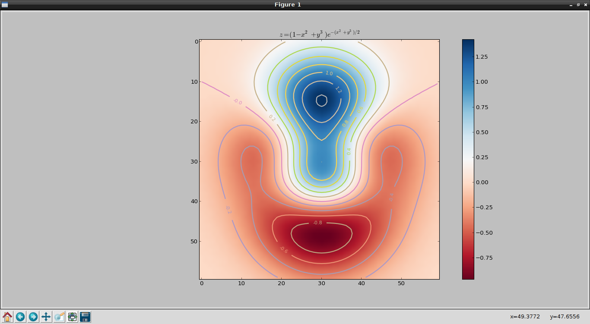

Graficar una función de 2 variables con matplotlib
Posted on jue 14 febrero 2013 in Tutorial Python • 2 min read
Este artículo se basa en el artículo en Ingles "How to plot a function of two variables with matplotlib".
Se tendrá 2 gráficas de una función de 2 variables, la primera será la gráfica de intensidad y la segunda gráfica será una gráfica 3D.
A continuación se muestra el código:
#!/usr/bin/env python
#De numpy se explorta arange y exp
from numpy import exp,arange
#De pylab se importa meshgrid, cm, imshow, contour, clabel, clorbar, axis, title y show
from pylab import meshgrid,cm,imshow,contour,clabel,colorbar,axis,title,show
from mpl_toolkits.mplot3d import Axes3D
from matplotlib import cm
from matplotlib.ticker import LinearLocator, FormatStrFormatter
import matplotlib.pyplot as plt
#Se define la funcion que se va a graficar
def z_func(x,y):
return (1-(x**2+y**3))*exp(-(x**2+y**2)/2)
def graficaIntencidad(Z):
#Se dibuja la funcion
im = imshow(Z,cmap=cm.RdBu)
#Se agrega el contorno de lineas con sus etiquetas
cset = contour(Z,arange(-1,1.5,0.2),linewidths=2,cmap=cm.Set2)
clabel(cset,inline=True,fmt='%1.1f',fontsize=10)
#Se agrega la barra de colores a la derecha
colorbar(im)
#Se crea el titulo de la grafica con estilo latex
title('$z=(1-x^2+y^3) e^{-(x^2+y^3)/2}$')
#Se muestra la grafica
show()
def grafica3D(X,Y,Z):
fig = plt.figure()
ax = fig.gca(projection='3d')
surf = ax.plot_surface(X, Y, Z, rstride=1, cstride=1,
cmap=cm.RdBu,linewidth=0, antialiased=False)
ax.zaxis.set_major_locator(LinearLocator(10))
ax.zaxis.set_major_formatter(FormatStrFormatter('%.02f'))
fig.colorbar(surf, shrink=0.5, aspect=5)
plt.show()
if __name__ == '__main__':
#rango de valores para x y y.
x = arange(-3.0,3.0,0.1)
y = arange(-3.0,3.0,0.1)
#Se define la grilla de puntos
X,Y = meshgrid(x, y)
#Se evalua la funcion segun los valores de X y Y
Z = z_func(X, Y)
graficaIntencidad(Z)
grafica3D(X,Y,Z)
Al ejecutar el script se mostrará la primera gráfica, al cerrarla aparecerá la segunda gráfica.
La gráfica de intensidad se muestra a continuación:

La gráfica 3D se muestra a continuación:
¡Haz tu donativo! Si te gustó el artículo puedes realizar un donativo con Bitcoin (BTC) usando la billetera digital de tu preferencia a la siguiente dirección: 17MtNybhdkA9GV3UNS6BTwPcuhjXoPrSzV
O Escaneando el código QR desde la billetera: